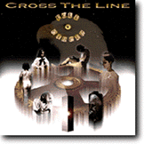

In the real world, I live in Malvern, Pennsylvania, USA at 40 02 10 N, 75 30 51 W.
If you are a really serious geek, you probably want to know about my home hardware.
My Politics
I support the Blue Ribbon Campaign to fight censorship of the Internet. The obnoxious "Communications Decency Act" is dead -- RIP 6/26/1997, and I'm proud to have helped kill it (A snapshot of this home page was part of the evidence exhibits in that suit!). But the war isn't over, because political idiots are still passing bad laws at the state level and may try again at the Federal one.
I support the Golden Key Campaign to protect individuals' rights to use strong encryption for privacy.
I have been active in efforts to protect freedom of expression on the Internet and fight off government censorship and regulation. See my Network Freedom page.
I am an armed man, prepared to use deadly force to defend my life and my freedom. I support the Second Amendment and firearms rights. See my firearms page for more.
If you think freedom works and is worth extending, both on and off the net, please consider joining the national Libertarian Party and your state affiliate. You can take the Nolan Quiz to find out how much you have in common with libertarians.
My Hobbies
I enjoy playing live-action role-playing games (LARPs). If you are a LARP organizer, you may be interested in my LARP resume.
I'm an old-time hex-wargamer grognard who has recently gotten into the newer Eurogame style. I have a page about the excellent Commands & Colors: Ancients game.
I have practiced Moo Do, an eclectic martial art based on Tae Kwon Do. In November 1997 I attained the rank of Black Belt (1st Dan). I have also studied aikido for four years, and have about eighteen months of Wing Chun kung fu. I am also a qualified swordsman in Sicilian cut-and-thrust fencing as taught by the Aegis school. I am currently studying Mixed Martial Arts.
 I play flute, guitar, hand drums, sing and compose. In December 1995 I got my second album gig, playing flute on two tracks of the album "Full Circle" by the band Cross The Line. Look for it in better record stores everywhere!
I enjoy playing with guns. See Eric's Gun Nut Page for more.
Links to Friends
(This list is by no means complete). Steve Barber; Jim Blandy; Steve Heller; The amazing Matuszeks; Guy Steele; Dave Talmage; Craig Trader and Carrie Hafer; Erik Troan; Cheshire Catalyst; Craig Presson; Doc Searls; Clovenshield (I fought with them at Pennsic XV).
If You Enjoyed My Pages...
Check out some of my favorites:
- The T.W.I.N.K.I.E. Page
- Cognitive Sciences Laboratory
- General Technics Home Page
- The Junk Science Home Page
- Mother Earth, Mother Board
- Hoot Island
Places I've Been
create your own visited states map
create your own visited country map